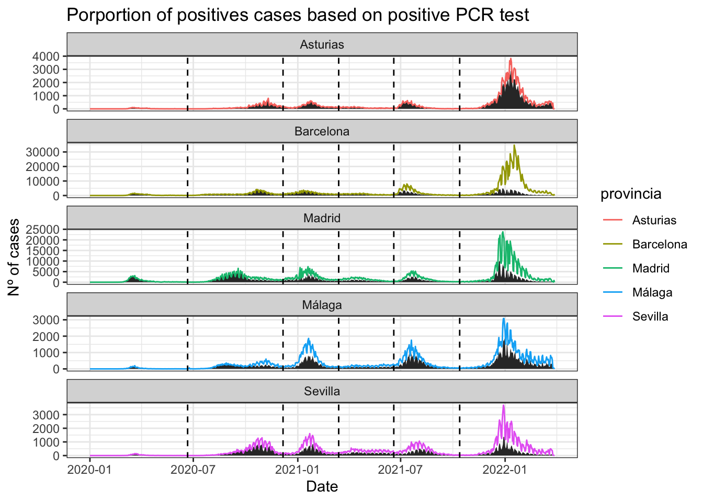
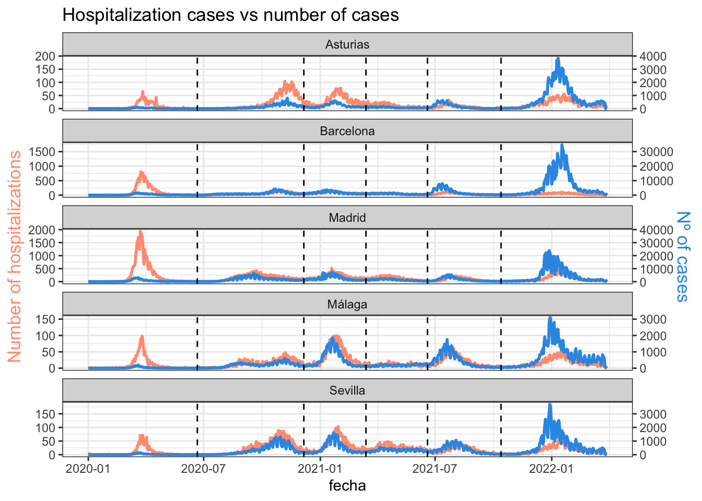
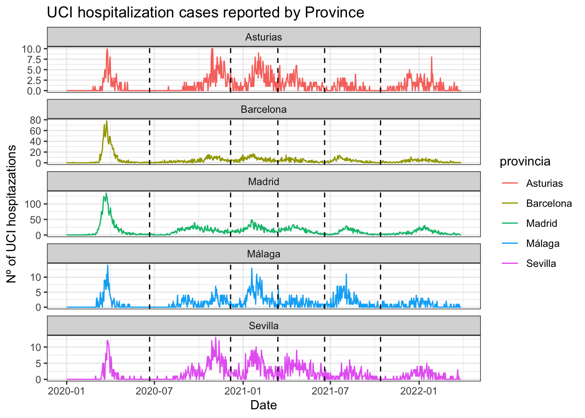

As previously mentioned, the visual analysis will focus on the following provinces:
Asturias
Barcelona
Madrid
Málaga
Sevilla
First, we need to load packages and clean data generated during previous tasks:
pacman::p_load( here, # file locator tidyverse, # data management and ggplot2 graphics skimr, # get overview of data janitor, # produce and adorn tabulations and cross-tabulations lubridate # manage dates)covid_data <-readRDS(here("data", "clean", "final_covid_data.rds"))covid_data
Accordign to CNE, in the evolution of the COVID-19 pandemic in Spain, there have been six periods:
First period: From the beginning of the pandemic until June 21, 2020, date on which the state of alarm in Spain ended after the end of the first epidemic outbreak of COVID-19.
Second period: June 22 through December 6, 2020, the turning point of the 14-day cumulative incidence (CI) of COVID-19 cases, between the second and third periods.
Third period: December 7, 2020 through March 14, 2021, AI tipping point at 14 days of COVID-19 cases, between the third and fourth epidemic periods.
Fourth period: March 15, 2021 through June 19, the 14-day AI tipping point for COVID-19 cases, between the fourth and fifth epidemic periods.
Fifth period: June 20, 2021 through October 13, AI tipping point at 14 days of COVID-19 cases, between the fifth and sixth epidemic periods.
Sixth period: From October 14, 2021 to the present, which may vary depending on the epidemiological situation of the pandemic in Spain.
In the following plots, those periods are marked with vertical dashed lines.
covid_data %>%ggplot(aes(x = fecha, y = num_casos)) +geom_line(aes(color = provincia)) +geom_vline(xintercept =as.Date("2020-06-21", format ="%Y-%m-%d"), linetype="dashed") +geom_vline(xintercept =as.Date("2020-12-06", format ="%Y-%m-%d"), linetype="dashed") +geom_vline(xintercept =as.Date("2021-03-14", format ="%Y-%m-%d"), linetype="dashed") +geom_vline(xintercept =as.Date("2021-06-19", format ="%Y-%m-%d"), linetype="dashed") +geom_vline(xintercept =as.Date("2021-10-13", format ="%Y-%m-%d"), linetype="dashed") +facet_wrap(~provincia, ncol=1) +theme(legend.position ="top") +labs(title="Cases reported by Province",x ="Date", y ="Nº of cases") +theme_bw()
The incidence of Covid-19 in Madrid and Barcelona are much higher than in the rest of the provinces, mainly due to the number of inhabitants. The next figure show the same information than the previous one but freeing the y-axis scale.
This approach will be followed in further plots.
covid_data %>%ggplot(aes(x = fecha, y = num_casos)) +geom_line(aes(color = provincia)) +geom_vline(xintercept =as.Date("2020-06-21", format ="%Y-%m-%d"), linetype="dashed") +geom_vline(xintercept =as.Date("2020-12-06", format ="%Y-%m-%d"), linetype="dashed") +geom_vline(xintercept =as.Date("2021-03-14", format ="%Y-%m-%d"), linetype="dashed") +geom_vline(xintercept =as.Date("2021-06-19", format ="%Y-%m-%d"), linetype="dashed") +geom_vline(xintercept =as.Date("2021-10-13", format ="%Y-%m-%d"), linetype="dashed") +facet_wrap(~provincia, scales ="free_y", ncol=1) +theme(legend.position ="top") +labs(title="Cases reported by Province (free y axis)",x ="Date", y ="Nº of cases") +theme_bw()
Normality study
# Histogram with density plotcovid_data %>%ggplot(aes(x=num_casos)) +geom_histogram(aes(y=..density..), colour="black", fill="white")+geom_density(alpha=.2, fill="#FF6666") +facet_wrap(~provincia, scales ="free_y", ncol=1) +theme_bw()
`stat_bin()` using `bins = 30`. Pick better value with `binwidth`.
covid_data %>%ggplot(aes(x = fecha)) +geom_line(aes(y = num_casos_prueba_pcr, color = provincia)) +geom_vline(xintercept =as.Date("2020-06-21", format ="%Y-%m-%d"), linetype="dashed") +geom_vline(xintercept =as.Date("2020-12-06", format ="%Y-%m-%d"), linetype="dashed") +geom_vline(xintercept =as.Date("2021-03-14", format ="%Y-%m-%d"), linetype="dashed") +geom_vline(xintercept =as.Date("2021-06-19", format ="%Y-%m-%d"), linetype="dashed") +geom_vline(xintercept =as.Date("2021-10-13", format ="%Y-%m-%d"), linetype="dashed") +facet_wrap(~provincia, scales ="free_y", ncol=1) +theme(legend.position ="top") +labs(title="PCR positives reported by Province",x ="Date", y ="Nº of PCR positives") +theme_bw()
Number of covid cases accounted by positive PCR tests:
covid_data %>%ggplot(aes(x = fecha)) +geom_area(aes(y = num_casos_prueba_pcr)) +geom_line(aes(y = num_casos, color = provincia)) +geom_vline(xintercept =as.Date("2020-06-21", format ="%Y-%m-%d"), linetype="dashed") +geom_vline(xintercept =as.Date("2020-12-06", format ="%Y-%m-%d"), linetype="dashed") +geom_vline(xintercept =as.Date("2021-03-14", format ="%Y-%m-%d"), linetype="dashed") +geom_vline(xintercept =as.Date("2021-06-19", format ="%Y-%m-%d"), linetype="dashed") +geom_vline(xintercept =as.Date("2021-10-13", format ="%Y-%m-%d"), linetype="dashed") +facet_wrap(~provincia, scales ="free_y", ncol=1) +theme(legend.position ="top") +labs(title="Porportion of positives cases based on positive PCR test",x ="Date", y ="Nº of cases") +theme_bw()

Number of hospitalizations:
covid_data %>%ggplot() +geom_line(aes(x = fecha, y = num_hosp, color = provincia)) +geom_vline(xintercept =as.Date("2020-06-21", format ="%Y-%m-%d"), linetype="dashed") +geom_vline(xintercept =as.Date("2020-12-06", format ="%Y-%m-%d"), linetype="dashed") +geom_vline(xintercept =as.Date("2021-03-14", format ="%Y-%m-%d"), linetype="dashed") +geom_vline(xintercept =as.Date("2021-06-19", format ="%Y-%m-%d"), linetype="dashed") +geom_vline(xintercept =as.Date("2021-10-13", format ="%Y-%m-%d"), linetype="dashed") +facet_wrap(~provincia, scales ="free_y", ncol=1) +theme(legend.position ="top") +labs(title="Hospitalization cases reported by Province",x ="Date", y ="Nº of hospitazations") +theme_bw()
Number of hospitalizations vs number of cases:
# Value used to transform the datacoeff <-50# A few constants for colorstemperatureColor <-"#69b3a2"priceColor <-rgb(0.2, 0.6, 0.9, 1)covid_data %>%ggplot(aes(x = fecha)) +geom_line( aes(y = num_hosp), size=1, color=temperatureColor) +geom_line( aes(y = num_casos / coeff), size=1, color=priceColor) +geom_vline(xintercept =as.Date("2020-06-21", format ="%Y-%m-%d"), linetype="dashed") +geom_vline(xintercept =as.Date("2020-12-06", format ="%Y-%m-%d"), linetype="dashed") +geom_vline(xintercept =as.Date("2021-03-14", format ="%Y-%m-%d"), linetype="dashed") +geom_vline(xintercept =as.Date("2021-06-19", format ="%Y-%m-%d"), linetype="dashed") +geom_vline(xintercept =as.Date("2021-10-13", format ="%Y-%m-%d"), linetype="dashed") +scale_y_continuous(# Features of the first axisname ="Number of hospitalizations",# Add a second axis and specify its featuressec.axis =sec_axis(~.*coeff, name="Nº of cases") ) +facet_wrap(~provincia, scales ="free_y", ncol=1) +theme_bw() +theme(axis.title.y =element_text(color = temperatureColor, size=13),axis.title.y.right =element_text(color = priceColor, size=13) ) +ggtitle("Temperature variation vs number of cases")

Number of UCI hospitalizations:
covid_data %>%ggplot() +geom_line(aes(x = fecha, y = num_uci, color = provincia)) +geom_vline(xintercept =as.Date("2020-06-21", format ="%Y-%m-%d"), linetype="dashed") +geom_vline(xintercept =as.Date("2020-12-06", format ="%Y-%m-%d"), linetype="dashed") +geom_vline(xintercept =as.Date("2021-03-14", format ="%Y-%m-%d"), linetype="dashed") +geom_vline(xintercept =as.Date("2021-06-19", format ="%Y-%m-%d"), linetype="dashed") +geom_vline(xintercept =as.Date("2021-10-13", format ="%Y-%m-%d"), linetype="dashed") +facet_wrap(~provincia, scales ="free_y", ncol=1) +theme(legend.position ="top") +labs(title="UCI hospitalization cases reported by Province",x ="Date", y ="Nº of UCI hospitazations") +theme_bw()

Number of UCI hospitalizations vs number of cases:
# Value used to transform the datacoeff <-500# A few constants for colorstemperatureColor <-"#69b3a2"priceColor <-rgb(0.2, 0.6, 0.9, 1)covid_data %>%ggplot(aes(x = fecha)) +geom_line( aes(y = num_uci), size=1, color=temperatureColor) +geom_line( aes(y = num_casos / coeff), size=1, color=priceColor) +geom_vline(xintercept =as.Date("2020-06-21", format ="%Y-%m-%d"), linetype="dashed") +geom_vline(xintercept =as.Date("2020-12-06", format ="%Y-%m-%d"), linetype="dashed") +geom_vline(xintercept =as.Date("2021-03-14", format ="%Y-%m-%d"), linetype="dashed") +geom_vline(xintercept =as.Date("2021-06-19", format ="%Y-%m-%d"), linetype="dashed") +geom_vline(xintercept =as.Date("2021-10-13", format ="%Y-%m-%d"), linetype="dashed") +scale_y_continuous(# Features of the first axisname ="Number of UCI hospitalizations",# Add a second axis and specify its featuressec.axis =sec_axis(~.*coeff, name="Nº of cases") ) +facet_wrap(~provincia, scales ="free_y", ncol=1) +theme_bw() +theme(axis.title.y =element_text(color = temperatureColor, size=13),axis.title.y.right =element_text(color = priceColor, size=13) ) +ggtitle("UCI hospitalization vs number of cases")
Number of deaths:
covid_data %>%ggplot() +geom_line(aes(x = fecha, y = num_def, color = provincia)) +geom_vline(xintercept =as.Date("2020-06-21", format ="%Y-%m-%d"), linetype="dashed") +geom_vline(xintercept =as.Date("2020-12-06", format ="%Y-%m-%d"), linetype="dashed") +geom_vline(xintercept =as.Date("2021-03-14", format ="%Y-%m-%d"), linetype="dashed") +geom_vline(xintercept =as.Date("2021-06-19", format ="%Y-%m-%d"), linetype="dashed") +geom_vline(xintercept =as.Date("2021-10-13", format ="%Y-%m-%d"), linetype="dashed") +facet_wrap(~provincia, scales ="free_y", ncol=1) +theme(legend.position ="top") +labs(title="Deaths reported by Province",x ="Date", y ="Nº of deaths") +theme_bw()
Meteorology
tmed vs tmin
covid_data %>%ggplot(aes(x = fecha)) +geom_line(aes(y = tmed, color = provincia)) +geom_line(aes(y = tmin, color = provincia)) +geom_vline(xintercept =as.Date("2020-06-21", format ="%Y-%m-%d"), linetype="dashed") +geom_vline(xintercept =as.Date("2020-12-06", format ="%Y-%m-%d"), linetype="dashed") +geom_vline(xintercept =as.Date("2021-03-14", format ="%Y-%m-%d"), linetype="dashed") +geom_vline(xintercept =as.Date("2021-06-19", format ="%Y-%m-%d"), linetype="dashed") +geom_vline(xintercept =as.Date("2021-10-13", format ="%Y-%m-%d"), linetype="dashed") +facet_wrap(~provincia, scales ="free_y", ncol=1) +theme(legend.position ="top") +labs(title="Evolution of temperature by Province",x ="Date", y ="Temperature (Celsius °)") +theme_bw()
Evolution of temperature vs number cases:
# Value used to transform the datacoeff <-400# A few constants for colorstemperatureColor <-"#69b3a2"priceColor <-rgb(0.2, 0.6, 0.9, 1)covid_data %>%ggplot(aes(x = fecha)) +geom_line( aes(y = tmin), size=1, color=temperatureColor) +geom_line( aes(y = num_casos / coeff), size=1, color=priceColor) +geom_vline(xintercept =as.Date("2020-06-21", format ="%Y-%m-%d"), linetype="dashed") +geom_vline(xintercept =as.Date("2020-12-06", format ="%Y-%m-%d"), linetype="dashed") +geom_vline(xintercept =as.Date("2021-03-14", format ="%Y-%m-%d"), linetype="dashed") +geom_vline(xintercept =as.Date("2021-06-19", format ="%Y-%m-%d"), linetype="dashed") +geom_vline(xintercept =as.Date("2021-10-13", format ="%Y-%m-%d"), linetype="dashed") +scale_y_continuous(# Features of the first axisname ="Temperature (Celsius °)",# Add a second axis and specify its featuressec.axis =sec_axis(~.*coeff, name="Nº of cases") ) +facet_wrap(~provincia, scales ="free_y", ncol=1) +theme_bw() +theme(axis.title.y =element_text(color = temperatureColor, size=13),axis.title.y.right =element_text(color = priceColor, size=13) ) +ggtitle("Temperature variation vs number of cases")
Precipitations
covid_data %>%ggplot(aes(x = fecha)) +geom_area(aes(y = prec, fill = provincia)) +geom_vline(xintercept =as.Date("2020-06-21", format ="%Y-%m-%d"), linetype="dashed") +geom_vline(xintercept =as.Date("2020-12-06", format ="%Y-%m-%d"), linetype="dashed") +geom_vline(xintercept =as.Date("2021-03-14", format ="%Y-%m-%d"), linetype="dashed") +geom_vline(xintercept =as.Date("2021-06-19", format ="%Y-%m-%d"), linetype="dashed") +geom_vline(xintercept =as.Date("2021-10-13", format ="%Y-%m-%d"), linetype="dashed") +facet_wrap(~provincia, scales ="free_y", ncol=1) +theme(legend.position ="top") +labs(title="Precipitations meassured by Province",x ="Date", y ="Precipitation (mm)") +theme_bw()
Precipitations vs number cases:
# Value used to transform the datacoeff <-200# A few constants for colorstemperatureColor <-"#69b3a2"priceColor <-rgb(0.2, 0.6, 0.9, 1)covid_data %>%ggplot(aes(x = fecha)) +geom_line( aes(y = prec), size=1, color=temperatureColor) +geom_line( aes(y = num_casos / coeff), size=1, color=priceColor) +geom_vline(xintercept =as.Date("2020-06-21", format ="%Y-%m-%d"), linetype="dashed") +geom_vline(xintercept =as.Date("2020-12-06", format ="%Y-%m-%d"), linetype="dashed") +geom_vline(xintercept =as.Date("2021-03-14", format ="%Y-%m-%d"), linetype="dashed") +geom_vline(xintercept =as.Date("2021-06-19", format ="%Y-%m-%d"), linetype="dashed") +geom_vline(xintercept =as.Date("2021-10-13", format ="%Y-%m-%d"), linetype="dashed") +scale_y_continuous(# Features of the first axisname ="Precipitation (mm)",# Add a second axis and specify its featuressec.axis =sec_axis(~.*coeff, name="Nº of cases") ) +facet_wrap(~provincia, scales ="free_y", ncol=1) +theme_bw() +theme(axis.title.y =element_text(color = temperatureColor, size=13),axis.title.y.right =element_text(color = priceColor, size=13) ) +ggtitle("Precipitations meassured vs number of cases")
Mobility
grocery and pharmacy
covid_data %>%ggplot(aes(x = fecha)) +geom_line(aes(y = mob_grocery_pharmacy, color = provincia)) +geom_vline(xintercept =as.Date("2020-06-21", format ="%Y-%m-%d"), linetype="dashed") +geom_vline(xintercept =as.Date("2020-12-06", format ="%Y-%m-%d"), linetype="dashed") +geom_vline(xintercept =as.Date("2021-03-14", format ="%Y-%m-%d"), linetype="dashed") +geom_vline(xintercept =as.Date("2021-06-19", format ="%Y-%m-%d"), linetype="dashed") +geom_vline(xintercept =as.Date("2021-10-13", format ="%Y-%m-%d"), linetype="dashed") +facet_wrap(~provincia, scales ="free_y", ncol=1) +theme(legend.position ="top") +labs(title="Grocery and pharmacy",x ="Date", y ="Flujo (% ref day)") +theme_bw()
# Value used to transform the datacoeff <-50# A few constants for colorstemperatureColor <-"#69b3a2"priceColor <-rgb(0.2, 0.6, 0.9, 1)covid_data %>%ggplot(aes(x = fecha)) +geom_line( aes(y = mob_grocery_pharmacy), size=1, color=temperatureColor) +geom_line( aes(y = num_casos / coeff), size=1, color=priceColor) +geom_vline(xintercept =as.Date("2020-06-21", format ="%Y-%m-%d"), linetype="dashed") +geom_vline(xintercept =as.Date("2020-12-06", format ="%Y-%m-%d"), linetype="dashed") +geom_vline(xintercept =as.Date("2021-03-14", format ="%Y-%m-%d"), linetype="dashed") +geom_vline(xintercept =as.Date("2021-06-19", format ="%Y-%m-%d"), linetype="dashed") +geom_vline(xintercept =as.Date("2021-10-13", format ="%Y-%m-%d"), linetype="dashed") +scale_y_continuous(# Features of the first axisname ="Visits to groceries and pharmacies (%)",# Add a second axis and specify its featuressec.axis =sec_axis(~.*coeff, name="Nº of cases") ) +facet_wrap(~provincia, scales ="free_y", ncol=1) +theme_bw() +theme(axis.title.y =element_text(color = temperatureColor, size=13),axis.title.y.right =element_text(color = priceColor, size=13) ) +ggtitle("Visits to groceries and pharmacies vs number of cases")
# Value used to transform the datacoeff <-50# A few constants for colorstemperatureColor <-"#69b3a2"priceColor <-rgb(0.2, 0.6, 0.9, 1)covid_data %>%ggplot(aes(x = fecha)) +geom_line( aes(y = mob_grocery_pharmacy), size=1, color=temperatureColor) +geom_line( aes(y = num_casos / coeff), size=1, color=priceColor) +geom_vline(xintercept =as.Date("2020-06-21", format ="%Y-%m-%d"), linetype="dashed") +geom_vline(xintercept =as.Date("2020-12-06", format ="%Y-%m-%d"), linetype="dashed") +geom_vline(xintercept =as.Date("2021-03-14", format ="%Y-%m-%d"), linetype="dashed") +geom_vline(xintercept =as.Date("2021-06-19", format ="%Y-%m-%d"), linetype="dashed") +geom_vline(xintercept =as.Date("2021-10-13", format ="%Y-%m-%d"), linetype="dashed") +scale_y_continuous(# Features of the first axisname ="Visits to parks (%)",# Add a second axis and specify its featuressec.axis =sec_axis(~.*coeff, name="Nº of cases") ) +facet_wrap(~provincia, scales ="free_y", ncol=1) +theme_bw() +theme(axis.title.y =element_text(color = temperatureColor, size=13),axis.title.y.right =element_text(color = priceColor, size=13) ) +ggtitle("Visits to parks vs number of cases")
# Value used to transform the datacoeff <-50# A few constants for colorstemperatureColor <-"#69b3a2"priceColor <-rgb(0.2, 0.6, 0.9, 1)covid_data %>%ggplot(aes(x = fecha)) +geom_line( aes(y = mob_grocery_pharmacy), size=1, color=temperatureColor) +geom_line( aes(y = num_casos / coeff), size=1, color=priceColor) +geom_vline(xintercept =as.Date("2020-06-21", format ="%Y-%m-%d"), linetype="dashed") +geom_vline(xintercept =as.Date("2020-12-06", format ="%Y-%m-%d"), linetype="dashed") +geom_vline(xintercept =as.Date("2021-03-14", format ="%Y-%m-%d"), linetype="dashed") +geom_vline(xintercept =as.Date("2021-06-19", format ="%Y-%m-%d"), linetype="dashed") +geom_vline(xintercept =as.Date("2021-10-13", format ="%Y-%m-%d"), linetype="dashed") +scale_y_continuous(# Features of the first axisname ="Visits to residential places (%)",# Add a second axis and specify its featuressec.axis =sec_axis(~.*coeff, name="Nº of cases") ) +facet_wrap(~provincia, scales ="free_y", ncol=1) +theme_bw() +theme(axis.title.y =element_text(color = temperatureColor, size=13),axis.title.y.right =element_text(color = priceColor, size=13) ) +ggtitle("Visits to residential places vs number of cases")
# Value used to transform the datacoeff <-50# A few constants for colorstemperatureColor <-"#69b3a2"priceColor <-rgb(0.2, 0.6, 0.9, 1)covid_data %>%ggplot(aes(x = fecha)) +geom_line( aes(y = mob_grocery_pharmacy), size=1, color=temperatureColor) +geom_line( aes(y = num_casos / coeff), size=1, color=priceColor) +geom_vline(xintercept =as.Date("2020-06-21", format ="%Y-%m-%d"), linetype="dashed") +geom_vline(xintercept =as.Date("2020-12-06", format ="%Y-%m-%d"), linetype="dashed") +geom_vline(xintercept =as.Date("2021-03-14", format ="%Y-%m-%d"), linetype="dashed") +geom_vline(xintercept =as.Date("2021-06-19", format ="%Y-%m-%d"), linetype="dashed") +geom_vline(xintercept =as.Date("2021-10-13", format ="%Y-%m-%d"), linetype="dashed") +scale_y_continuous(# Features of the first axisname ="Visits to retail and recreation places (%)",# Add a second axis and specify its featuressec.axis =sec_axis(~.*coeff, name="Nº of cases") ) +facet_wrap(~provincia, scales ="free_y", ncol=1) +theme_bw() +theme(axis.title.y =element_text(color = temperatureColor, size=13),axis.title.y.right =element_text(color = priceColor, size=13) ) +ggtitle("Visits to retail and recreation places vs number of cases")
# Value used to transform the datacoeff <-50# A few constants for colorstemperatureColor <-"#69b3a2"priceColor <-rgb(0.2, 0.6, 0.9, 1)covid_data %>%ggplot(aes(x = fecha)) +geom_line( aes(y = mob_transit_stations), size=1, color=temperatureColor) +geom_line( aes(y = num_casos / coeff), size=1, color=priceColor) +geom_vline(xintercept =as.Date("2020-06-21", format ="%Y-%m-%d"), linetype="dashed") +geom_vline(xintercept =as.Date("2020-12-06", format ="%Y-%m-%d"), linetype="dashed") +geom_vline(xintercept =as.Date("2021-03-14", format ="%Y-%m-%d"), linetype="dashed") +geom_vline(xintercept =as.Date("2021-06-19", format ="%Y-%m-%d"), linetype="dashed") +geom_vline(xintercept =as.Date("2021-10-13", format ="%Y-%m-%d"), linetype="dashed") +scale_y_continuous(# Features of the first axisname ="Visits to transit stations (%)",# Add a second axis and specify its featuressec.axis =sec_axis(~.*coeff, name="Nº of cases") ) +facet_wrap(~provincia, scales ="free_y", ncol=1) +theme_bw() +theme(axis.title.y =element_text(color = temperatureColor, size=13),axis.title.y.right =element_text(color = priceColor, size=13) ) +ggtitle("Visits to transit stations vs number of cases")
# Value used to transform the datacoeff <-50# A few constants for colorstemperatureColor <-"#69b3a2"priceColor <-rgb(0.2, 0.6, 0.9, 1)covid_data %>%ggplot(aes(x = fecha)) +geom_line( aes(y = mob_transit_stations), size=1, color=temperatureColor) +geom_line( aes(y = num_casos / coeff), size=1, color=priceColor) +geom_vline(xintercept =as.Date("2020-06-21", format ="%Y-%m-%d"), linetype="dashed") +geom_vline(xintercept =as.Date("2020-12-06", format ="%Y-%m-%d"), linetype="dashed") +geom_vline(xintercept =as.Date("2021-03-14", format ="%Y-%m-%d"), linetype="dashed") +geom_vline(xintercept =as.Date("2021-06-19", format ="%Y-%m-%d"), linetype="dashed") +geom_vline(xintercept =as.Date("2021-10-13", format ="%Y-%m-%d"), linetype="dashed") +scale_y_continuous(# Features of the first axisname ="Visits to workplaces (%)",# Add a second axis and specify its featuressec.axis =sec_axis(~.*coeff, name="Nº of cases") ) +facet_wrap(~provincia, scales ="free_y", ncol=1) +theme_bw() +theme(axis.title.y =element_text(color = temperatureColor, size=13),axis.title.y.right =element_text(color = priceColor, size=13) ) +ggtitle("Visits to workplaces vs number of cases")
# Value used to transform the datacoeff <-50# A few constants for colorstemperatureColor <-"#69b3a2"priceColor <-rgb(0.2, 0.6, 0.9, 1)covid_data %>%ggplot(aes(x = fecha)) +geom_line( aes(y = mob_flujo), size=1, color=temperatureColor) +geom_line( aes(y = num_casos / coeff), size=1, color=priceColor) +geom_vline(xintercept =as.Date("2020-06-21", format ="%Y-%m-%d"), linetype="dashed") +geom_vline(xintercept =as.Date("2020-12-06", format ="%Y-%m-%d"), linetype="dashed") +geom_vline(xintercept =as.Date("2021-03-14", format ="%Y-%m-%d"), linetype="dashed") +geom_vline(xintercept =as.Date("2021-06-19", format ="%Y-%m-%d"), linetype="dashed") +geom_vline(xintercept =as.Date("2021-10-13", format ="%Y-%m-%d"), linetype="dashed") +scale_y_continuous(# Features of the first axisname ="General mobility (%)",# Add a second axis and specify its featuressec.axis =sec_axis(~.*coeff, name="Nº of cases") ) +facet_wrap(~provincia, scales ="free_y", ncol=1) +theme_bw() +theme(axis.title.y =element_text(color = temperatureColor, size=13),axis.title.y.right =element_text(color = priceColor, size=13) ) +ggtitle("General mobility vs number of cases")